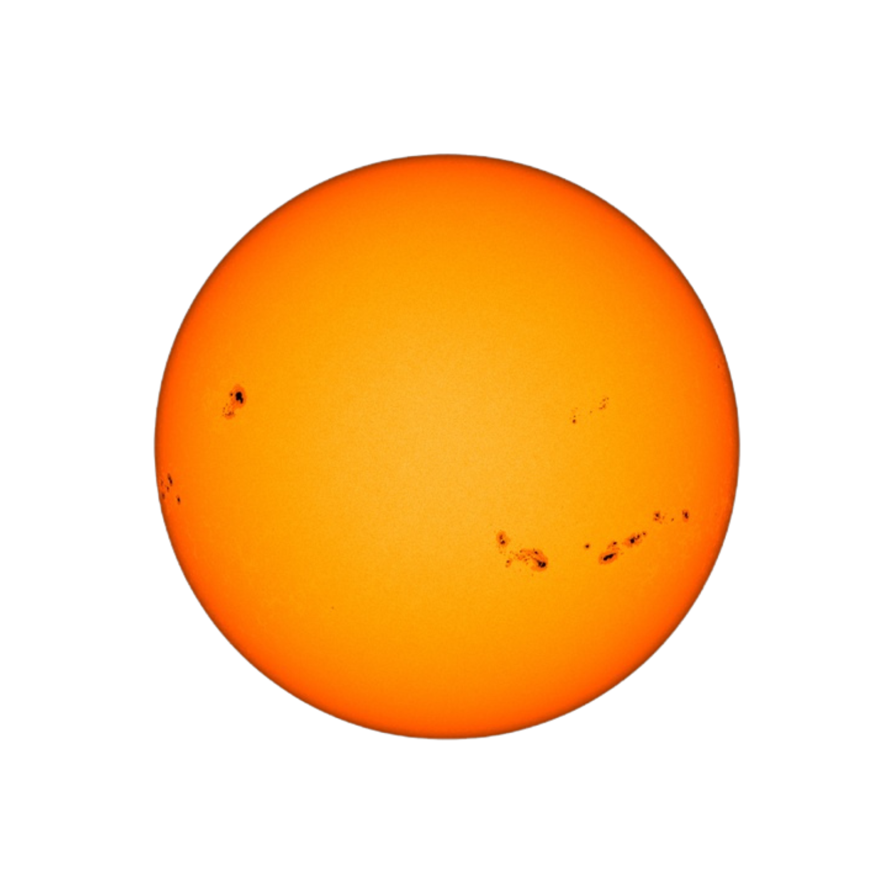
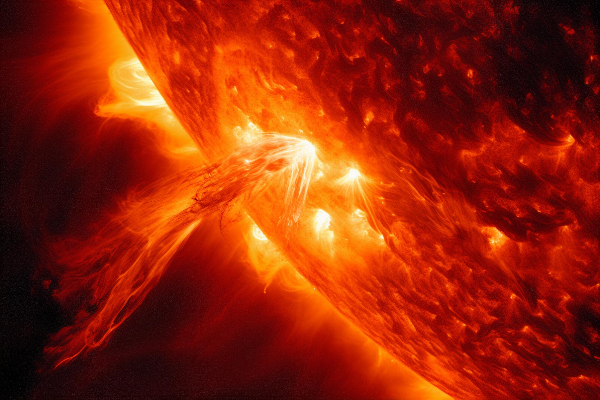
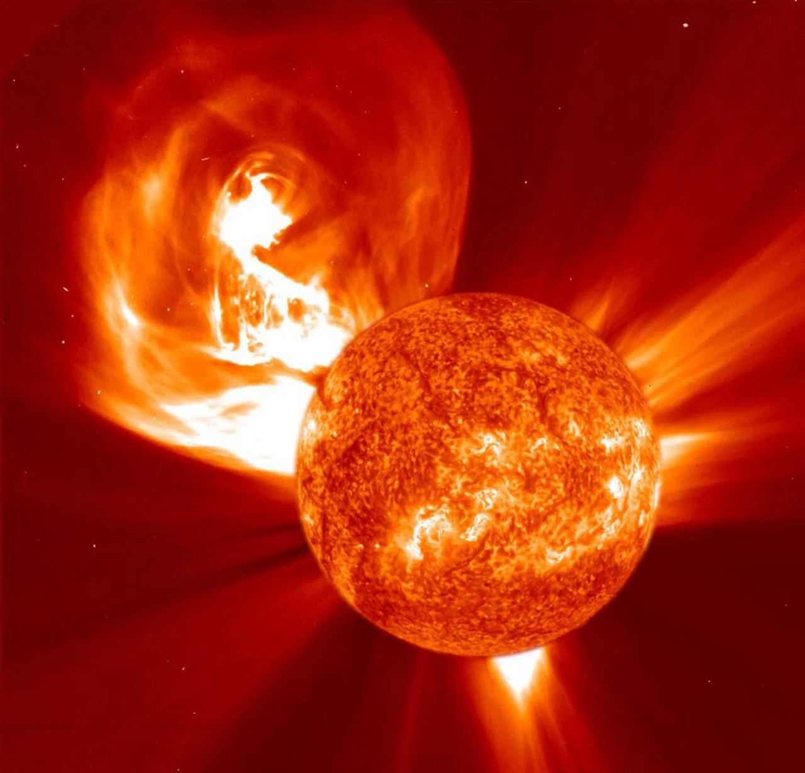

ALL ABOUT GEOMAGNETIC STORMS
The Sun's Volatility
The Sun is a dynamic star that undergoes continuous changes due to its magnetic activity. This activity affects the solar surface and leads to various phenomena, such as:
Sunspots: These are dark areas on the Sun's surface caused by intense magnetic activity. The temperatures in these regions are lower than in the surrounding areas, making them appear darker.
Solar Flares: These are sudden and intense bursts of energy that occur in the Sun's atmosphere. Solar flares release immense amounts of radiation, including light and X-rays, and can disrupt communications and technology on Earth.
Coronal Mass Ejections (CMEs): These are massive explosions of plasma and magnetic fields that are ejected from the Sun into space. CMEs can cause disturbances in Earth's magnetic field, leading to geomagnetic storms.
The Solar Corona: This is a thin, outer atmosphere of the Sun that extends far into space, consisting of ionized plasma. During specific events, like solar flares, this corona can be pushed outward, impacting the solar wind and affecting the Earth's environment.
These activities occur due to the twisting and tangling of the Sun's magnetic field, resulting in the release of vast amounts of energy. Understanding these phenomena is crucial for studying the Sun's effects on Earth and the space environment.


Sunspots: Dark spots on the Sun's surface indicate regions of intense magnetic activity. They can indicate increased likelihood of solar storms.

Solar Flares: These explosive bursts of radiation can occur during periods of heightened solar activity, sending energy out into space.

- Coronal Mass Ejections (CMEs): Large expulsions of plasma and magnetic fields from the Sun's corona can cause significant solar storms when they collide with Earth's magnetic field.

The Solar Corona: This is a thin, outer atmosphere of the Sun that extends far into space, consisting of ionized plasma. During specific events, like solar flares, this corona can be pushed outward, impacting the solar wind and affecting the Earth's environment.